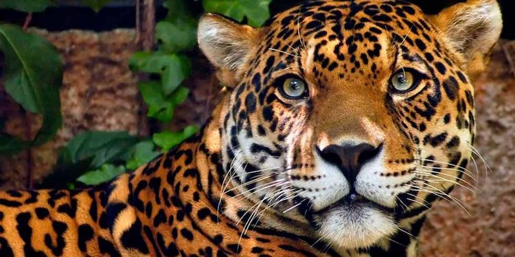
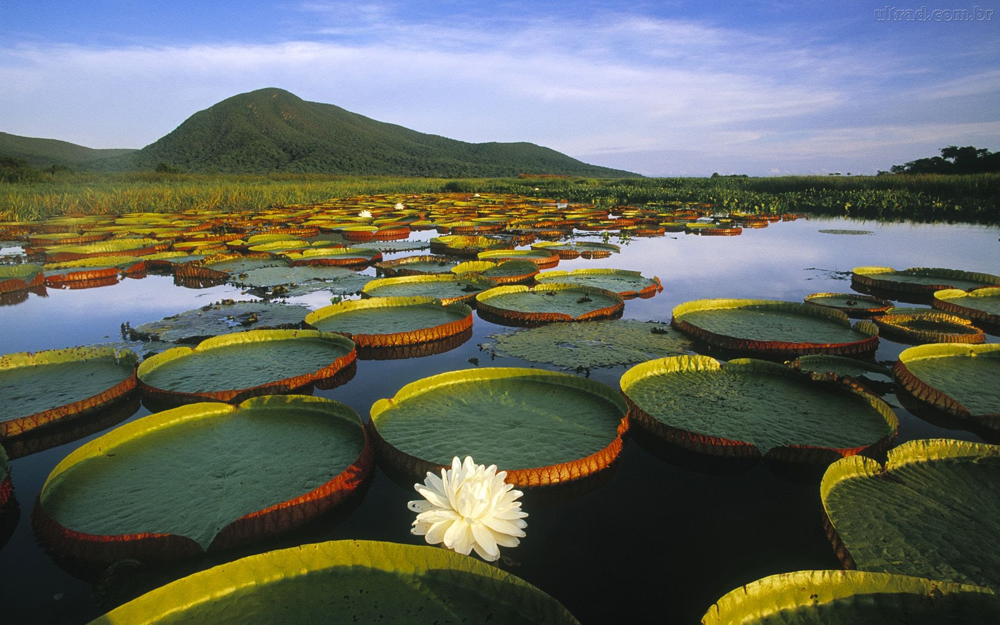
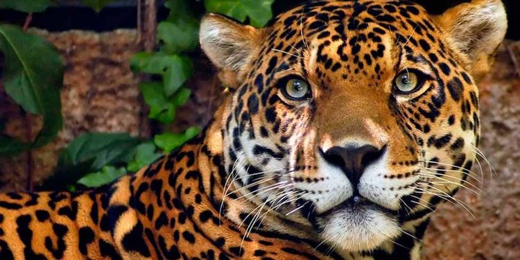
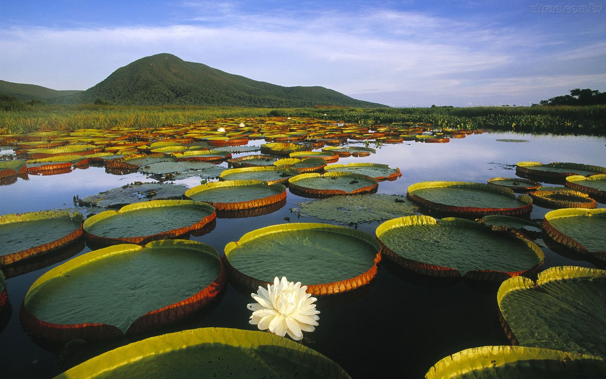
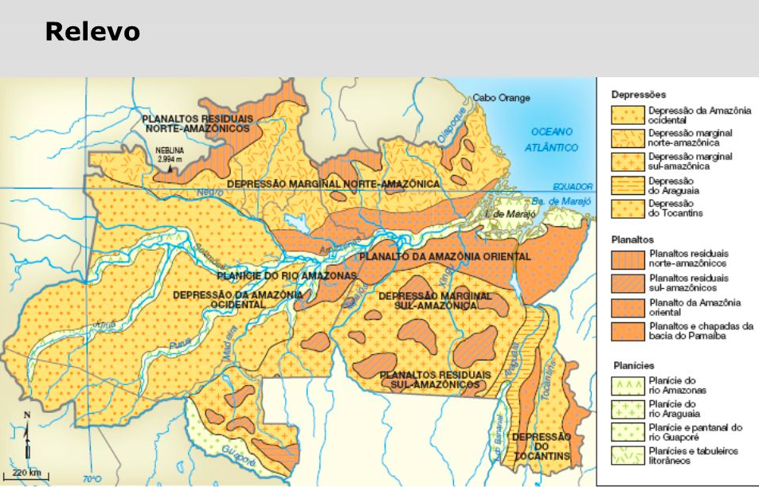
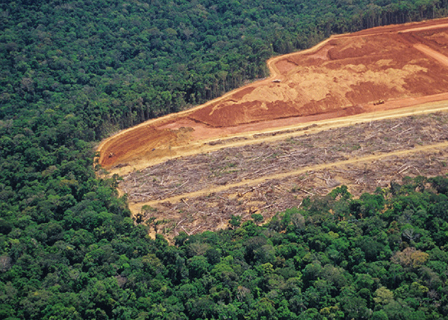
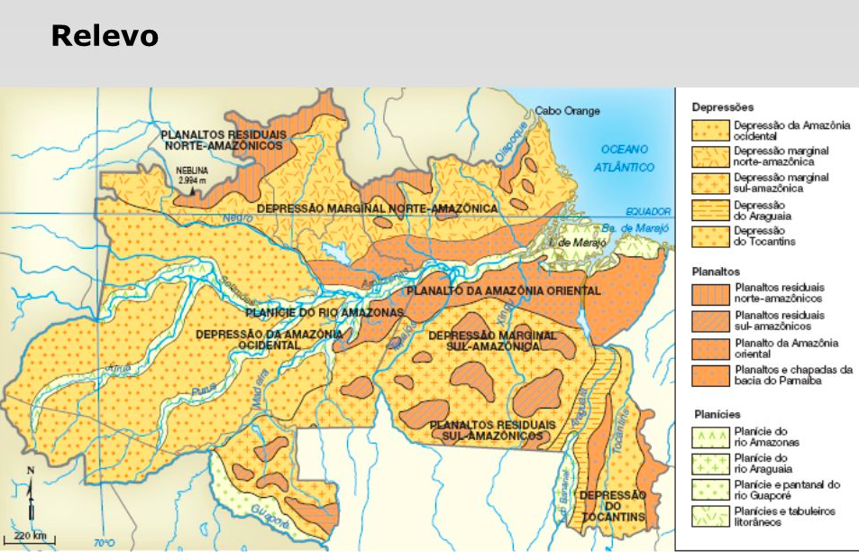
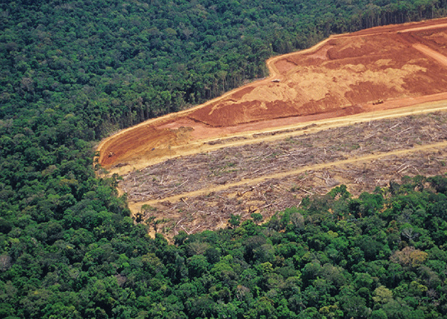

Introdução
A Amazônia é um bioma altamente biodiverso, abrangendo uma área de aproximadamente 6,9 milhões de km², o que representa mais de 40% do território nacional brasileiro. Este bioma inclui a Floresta Amazônica e a Bacia Amazônica, e se estende por nove países: Brasil, Bolívia, Colômbia, Equador, Venezuela, entre outros. É considerado um dos biomas mais importantes do mundo tanto ecológica quanto ambientalmente.
Neste site, você irá conhecer a riqueza da fauna e da flora amazônicas, conhecendo suas espécies e ecossistemas. Também vamos apresentar a topografia e o clima da região, que moldam sua paisagem e dinâmica. Além disso, abordaremos a arte e a cultura dos povos amazônicos, que refletem a conexão entre natureza e tradição.

Fauna e Flora
A Amazônia abriga uma vasta gama de fauna, incluindo pelo menos 311 espécies de mamíferos, 1.300 espécies de aves, 273 espécies de répteis, 232 espécies de anfíbios e 1.800 espécies de peixes continentais. Entre os animais notáveis da floresta, destacam-se jacarés, sucuris, diversas espécies de sapos, araras, papagaios, tucanos e gaviões.
A flora da Amazônia é extremamente rica e diversa, com cerca de 40 mil espécies de plantas. Entre as plantas notáveis estão a sumaúma (Ceiba pentandra), a vitória-régia (Victoria amazonica) e diversas orquídeas e bromélias. Esse bioma também abriga uma grande variedade de animais, incluindo 300 espécies de mamíferos e muitos primatas, como macacos-prego e macacos-aranha.
A fauna e a flora da Amazônia são extremamente importantes devido à sua rica biodiversidade e papel ecológico. Essa biodiversidade contribui para a estabilidade dos ecossistemas, oferece recursos naturais essenciais para as comunidades locais e desempenha um papel crucial na regulação do clima global. Além disso, a floresta amazônica é uma fonte vital de oxigênio e é considerada um dos maiores reservatórios de carbono do planeta.

 



Topografia e Clima
A topografia da Amazônia é marcada por uma grande diversidade, que inclui planícies extensas, planaltos e depressões. O relevo varia desde as maiores altitudes do país, como as do estado de Roraima, até as vastas áreas planas da calha do rio Amazonas. Essa variação topográfica impacta também fenômenos atmosféricos e a dinâmica da floresta tropical.
O clima da Amazônia é caracterizado como equatorial úmido e subúmido, com temperaturas médias anuais entre 22°C e 28°C, apresentando pouca variação. A região é bastante úmida devido à evapotranspiração das florestas, o que contribui para a manutenção de um ambiente quente e denso em vegetação. As florestas da Amazônia também desempenham um papel fundamental na regulação do clima tanto regional quanto global.
 



Arte e Cultura
A arte na Amazônia é influenciada por uma rica diversidade cultural, incluindo tradições indígenas e outros grupos que habitam a região. Desde a formação do Clube da Madrugada em 1945, os artistas têm buscado expressar a identidade amazônica e os desafios ambientais por meio de diferentes formas de arte. A arte também desempenha um papel fundamental na conscientização sobre questões sociais e ambientais que afetam a região, ampliando a sensibilidade das pessoas.
A cultura amazônica é rica e diversificada, marcada por tradições que incluem lendas, rituais e práticas comunitárias, profundamente influenciadas pela natureza da região. Essa cultura não apenas preserva saberes ancestrais, mas também engloba uma produção científica e tecnológica significativa, refletindo um desenvolvimento que vai além do folclore e do mito.